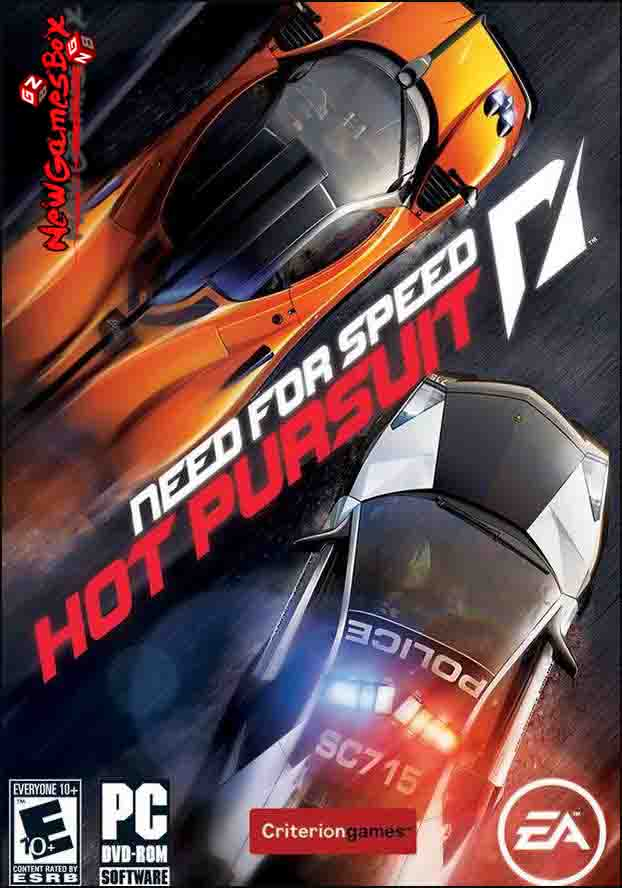

NFS MOST HOT PURSUIT
NFS HOT PURSUIT PC Game Overview
Just Like The Old NFS Games, Only This Time With Better Graphics. Very Fun To Play. It Is An Good Racing Game. Criterion Games Was The Developer Of This Game. The Publisher Of This Game Was Electronic Arts. 16 November 2010 Was The Release Date For This Game. You Have Wide Variety Of Cars In This Game. This Game Have Very Big Map To Play. You Start Off With A Low-tier Class Or Known As Sports Series. Then You Make Your Way Up, Fleeing Away From Cops. Doing Races To The Top-tier Class Of Hyper Series. This Both Applies Between Racer And Cop Modes. You Start Off Small, Then You Progress More And Meet More Challenge Races To Complete. Oh Yeah, And Better Cars. Game Sounds Along With Music Was Nice. For This You May Get Need For Speed Hot Pursuit Free Download PC Game.
Need For Speed Hot Pursuit Free Download PC Game Is Intense And Fast-pace With An Arcade Feel. You Typically Have Your Standard Races Where All You Have Is Just Racers With No Cops Involve. Then You Have Hot Pursuit. You Race While You Have The Heat Behind You With Police Cars Gaining Up On You With Brute Force. For The Cops, You Also Get Involve With The Racers. You Have To Bust Them Before They Reach The Finish. The Intercept Mode Is Basically The Same Thing. You Have To Bust Someone Before The Timer Runs Out For Specific Medals. You Have To Show Your Skills As Long As Possible In This Game. The Visuals Along With Graphics Was Good. The Weather And Time Also Is A Neat Feature. The Sun Sets On The Horizon As It Get’s Darker Out. It Is As Good As Rocket League Game.
System Requirements of NFS HOT PURSUIT
Before You Start NEED FOR SPEED HOT PURSUIT Download Free. Make Sure Your PC Meets Minimum System Requirements.
Recommended System Requirements
Operating System: Windows XP/ Windows Vista/ Windows 7/ Windows 8 and 8.1
CPU: 2.1 GHz Dual Core
RAM: 512 MB
Hard Disk: 10 GB
NFS HOT PURSUIT Free Download
Click On The Below Button To Start NFS HOT PURSUIT Free Download. It Is Full And Complete Game. Just Download And Start Playing It.
We Have Provided Direct Link Full Setup Of The Game.